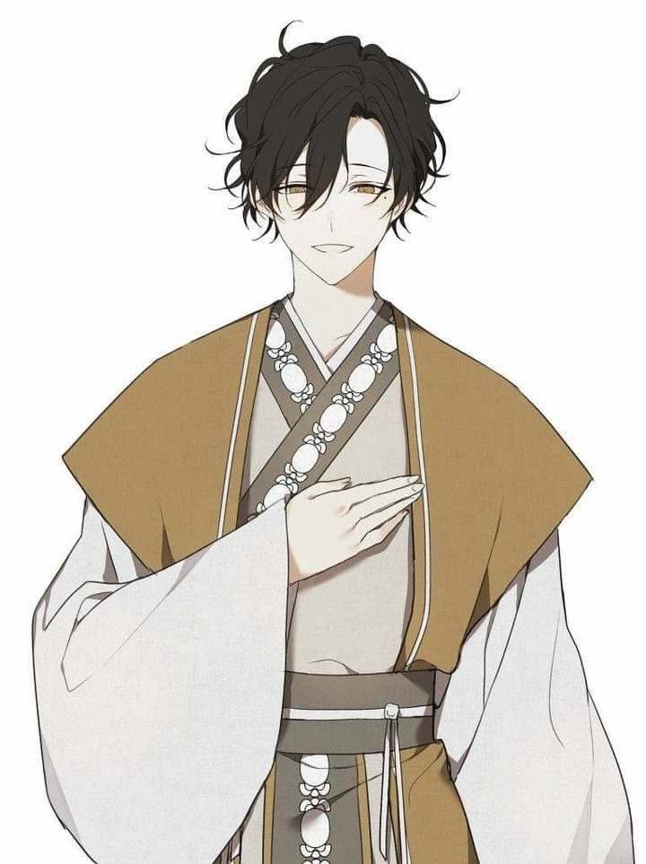

| Tetsugen Akagane | the Fox Akagane, the copper line of the Moto as of the morning of the seven lines in the Hall of Verdicts, standing beside the copper chair |
| Epithet | the Fox. The Yukari gave it to him, after the old tale of the Fox who could make a whole province happy and had nothing left for his own table, and it is half an insult. |
| Concept | He has held his own heart at twenty-five for forty years, and every heart near him beats when he says. |
| Stat line | Stage XI Dissonance · Grandmaster (Flawless) Level 395 · Refined, held at the hour · Kuramori (蔵守), the Granary Keeper Body XI Mastered, IV · Spirit X Walked 30%, III · Fate Studied 20%, II · Lenses: home + 1 |
| Shown | Level 190 Stage VII, Refraction · Expert (Faceted): the face THE COPPER HEART has held over his Crystal since the year he took the copper chair, and the figure every Hall assessor has entered for forty years |
| Combat grammar | Percussion: the open hand, the clinch and the heart under it; he has not fought in front of anyone living |
| Aura and sound | copper and raw red-bronze, like a banked forge under the lamps, with a slow pulse in it that keeps time with his heart; released, the pulse becomes a drum and the copper goes red as fresh blood in a basin sound: a heartbeat, low, felt in the floor; released, a war-drum under it feel: blood-warm, with the smell of copper and something sweet like the air after a thunderstorm; people near him find their own hearts loud, and snow round his feet goes pink |
| How he moves | He stands rooted, scarred hands on his belt, and when a room goes wrong his weight comes onto the balls of his feet and the right hand drifts to the knife on its own. |
| Stack | sustainable 700, 725 and 660 in Hemostasis, Longevity and Regeneration; 450 to 540 in Fortitude, Constitution, Forecast, Analysis and Command cap two steps on the hidden scale over the sustainable figure (to 1,200 on the first three, 950 on the rest) layers: THE COPPER HEART, always; TOSHI-GAERI when called |
| Bonded weapon | none; a horn-handled meat knife, and his own two hands |
| Kit | a short copper-ochre shoulder-cape over white sleeves, a gray sash with a red-bronze fox at the cord, raw copper rings, a tall copper-lacquered war-bow nobody at the Seat knows he still owns, and the piece people talk about first: a Common horn-handled meat knife, the only steel a lord of the seven lines has ever been seen to carry |
| Voice | ”I’ll not obey you, boy. I’ll follow you. It’s a different thing. You’ll find out how different the first time you’re wrong.” speaker type: an old field commander and provisioner who has given orders where nobody could hear anything gentler, and announces his dislikes for the record |
| Next gate | Stage XII, Emanation Catalyst: the Sennen road, a wound carried as structural damage for forty years, consciously processed into architecture holds at Level 320, which his 395 already passes: only the Catalyst is wanting, and past Level 400 without it he would come into Residual Strain |
I. Identity
| Field | Value |
|---|---|
| Full Name | Tetsugen Akagane |
| Pronunciation | tet-SOO-gen ah-kah-GAH-neh |
| Alias / Title | Lord Tetsugen · Leader of the Copper Line, of the Blood and Heart Arts · the old copper lord, to everyone who knows how old he is |
Also Known As
| Name | Who says it |
|---|---|
| the Fox | to the Yukari, after the old tale of the Fox who could make a whole province happy and had nothing left for his own table |
| Akagane, bare | to Kagenori and to Borin Ironheart |
| Field | Value |
|---|---|
| Race / Lineage | Human. Akagane, the copper line of the Moto; its colors copper and raw red-bronze, its beasts the Fox, the Red Wolf, the Viper and the Red Hawk; its arts the Blood and Heart Arts, which keep a heart and can stop one. The Akagane never swore to the red; they only ever obeyed it. |
| Age | Seventy-seven. He looks twenty-five, and has for most of his life |
| Realm / Faction | The Akagane and the Kurogane valley; the copper chair of the Hall of Verdicts; sworn to Muken Moto to follow, not to obey |
| School and sect rank | The Akagane house and its Blood and Heart Arts, learned at his grandfather’s hands lord of the Akagane and the copper chair, since before Gimbzo’s father died |
Renown
| Among | What they say of him |
|---|---|
| public | the Akagane lord who threw open nothing, until he gave it all away |
| army | the north remembers him at the head of a column on the Sennen road with a Zettari border town burning behind him |
| sects | the seven lines have watched him sit the copper chair for forty years without ever seeming to age, and do not ask |
| guilds | his provisioning books are the best kept in the north |
| epithet | the Fox |
| true standing | known to Kiyome Byakuya and Hayato Amagiri, and to nobody else alive |
| Field | Value |
|---|---|
| Catalyst Event | Three winters ago, when the Tenrai withheld seed grain from the Kurogane valley because his eldest spoke against a levy in council, and he buried forty-one of his own tenants that spring, most of them under twelve, and stood at the edge of the pit and thought of nothing but the Sennen road |
| Refusal | He will not kneel to the red, and he will not ask anyone’s forgiveness for what he did |
| Conviction | Wet wood burns eventually, and a liar never dries. He was wet wood for forty years; it took him that long to catch. He does not ask anyone to think well of the fire |
| Arc kind | Positive, late: a bad man who would like to be the kind of bad man who tells the truth about it |
II. Soul Architecture
| Field | Value |
|---|---|
| Level | 395; it holds Dissonance (301) and would hold Emanation (320), and no Residual Strain builds in him short of 400 |
| Temperance Stage | XI, Dissonance · Grandmaster; he can see his own Crystal, and has looked, and does not like it. The fracture runs along the Sennen road |
| Path outliers | Attunement and Empathy stand past the Fate gates at the figures below. Fate is Studied now, so no new point lands on them past a gate |
| Path | Body XI Mastered · Spirit X Walked 30% · Fate Studied 20%. Body holds the heart and the blood; Spirit holds the long read and the books; Fate holds very little, because he has never sworn to anything he could not walk away from, until the woodpile |
| Mastery | Body IV, Luminous: the lead, read from Level under Dissonance’s ceiling, on which the heart and the blood are held · Spirit III, Confessor: Walked a rung behind · Fate II, Drawn: Studied two rungs behind and capped there, the Akagane blood having no Work behind it |
| Yield (η) | 0.80 |
| Lenses | home Anima Spirare + 1 held (Verdantia) |
| Soul Crystal | Flawless |
| Crystal State | Refined; old, and kept, and held at the hour |
| Class | Kuramori (蔵守), the Granary Keeper: the man who holds the store, signs for what leaves it and knows who ate gives: the keeper’s count, by which he knows without looking what is in a store, a column or a body and what has gone out of it shapes: his points fall to holding and to counting, Hemostasis, Longevity, Retention, Analysis and Command, and almost none to speed evolved from: a steward’s class of the Akagane house, offered back changed after his first provisioning seal, and evolving with his Body Mastery since. |
III. Wellspring Harmonizations
| Wellspring | Folk name | Depth | Got from | What it bends in him |
|---|---|---|---|---|
| Anima Spirare | the Soul’s Breath (his house says the Breath of the Living) | governing | — | the heart’s own current; what the Akagane keep and what they can stop |
| Verdantia | the Green | deep | — | the body’s renewal, held at the hour it was taken |
IV. Primary Stats
| Primary | Total | Mean |
|---|---|---|
| Vitality | 2,925 | 365.62 |
| Ardency | 1,395 | 174.38 |
| Gnosis | 2,030 | 253.75 |
| Dexterity | 1,415 | 176.88 |
| Harmonics | 1,080 | 135.00 |
| Resilience | 1,075 | 134.38 |
| Tempering | 1,665 | 208.12 |
| Dominion (seven, Throne apart) | 1,510 | 215.71 |
| Throne | not opened | · |
| Field | Value |
|---|---|
| Pool | 13,095 |
| Spent | 13,095 |
| Unspent | 0 |
V. Sub-Stats
| Primary | ||||||||
|---|---|---|---|---|---|---|---|---|
| Vitality | Fortitude 450 | Absorption 110 | Constitution 450 | Hemostasis 700 | Regeneration 660 | Filtration 185 | Tolerance 205 | Threshold 165 |
| Ardency | Flux 280 | Alacrity 95 | Depth 260 | Penetration 355 | Compression 185 | Cascade 55 | Overchannel 35 | Density 130 |
| Gnosis | Perception 240 | Acuity 130 | Forecast 540 | Fluency 35 | Retention 300 | Analysis 505 | Cognition 75 | Vigilance 205 |
| Dexterity | Celerity 205 | Reflex 280 | Finesse 130 | Economy 150 | Evasion 95 | Grapple 350 | Feint 55 | Sequence 150 |
| Harmonics | Attunement 280 | Projection 95 | Breadth 75 | Stability 165 | Empathy 240 | Synergy 75 | Axis 95 | Suppression 55 |
| Resilience | Integrity 220 | Ward 130 | Persistence 55 | Anchoring 220 | Fortification 130 | Hardening 95 | Oath 150 | Continuity 75 |
| Tempering | Clarity 150 | Overflow 35 | Maturity 220 | Coherence 185 | Yield 205 | Ceiling 35 | Capacity 110 | Longevity 725 |
| Dominion | Radius 130 | Sovereignty 150 | Sense 150 | Gravity 205 | Pressure 315 | Command 525 | Fate 35 | — |
Field
Note
Value
Longevity 725 is forty years of the hold, at the top of what Dissonance will carry and past the line where it carries risk; Hemostasis 700 and Regeneration 660 are the copper heart: the body kept, the blood kept in, the years held off.
VI. Force of Hand
| Measure | Figure | Feat | Carried by | Note |
|---|---|---|---|---|
| Strike Force | Penetration 355 | — | Penetration 355 | what kills is where the palm lands and when, not how hard |
| Lifting | Fortitude 450, Constitution 450 | two cairn stones, one in each fist | Fortitude and Constitution 450 | he worked a forge bellows four hours without stopping, and could have carried the cairn |
| Travel speed | Celerity 205 | Mach 1.5 to 5 | Celerity 205 | — |
| Reaction | Reflex 280 | 0.2 to 1 ms | Reflex 280 | an old soldier’s hand still goes to the knife on its own when a room goes wrong |
| Durability | Fortitude 450 | — | Fortitude 450, and Hemostasis 700 keeps the blood in | a cut on him closes before it has finished being a cut |
VII. Aether Flow
| Measure | Figure | Note |
|---|---|---|
| EU Reserve | 302,649,527 EU | — |
| Flux Density | 6,500,000 EU/g | — |
| AU/s | 5,200,000 | — |
| From full | empties in 58.2 seconds at full output, Starvation at 52.4 seconds | — |
| Recovery | ten per cent a minute at rest | less what THE COPPER HEART draws, which is always something |
Spending tells
| Reserve left | What shows |
|---|---|
| half | the copper pulse in his aura slows |
| a quarter | gray comes in at his temples and lines at his eyes |
| a tenth | sixty-one years begin to arrive |
VIII. Traits
Full accounts: Tetsugen Akagane — Abilities
Every Trait reads at his lead Mastery, Body IV.
| Trait | Kind | Source | Path and Form | Gates | What it does | Limit | Tell | Cost | Counter | Numbers |
|---|---|---|---|---|---|---|---|---|---|---|
| THE COPPER HEART · 銅の心 Akagane no Kokoro | Inherited | Inherited | Path Body, Mastered · Lens Anima Spirare for the beat, Verdantia for the hour · Form Shape | none on the card | THE COPPER HEART (銅の心 · Akagane no Kokoro). His heart has kept the beat it had the year he took the copper chair, and his body and the face of his Crystal have stayed at that hour with it. A slow copper pulse in his aura keeps its time. | The reserve. Starved, drugged or knocked senseless, the hold slips, and the years he has been keeping off come into him at once, gray into the hair and lines into the face and a sixty-one-year-old heart laboring in a young man’s chest, until he can take hold again; the longer it lapses the more of them stay, and with them the Veil goes. | The copper pulse in his aura keeping time with his heart, which no young man’s aura does. | About one per cent of his reserve an hour, every hour, asleep or awake, for as long as he lives; near 3,026,000 EU an hour. | Starve him, or catch him asleep. | The Copper Heart: for life; the Veil costs nothing more |
| IN HIS PLACE | Primary | — | Path Spirit, Walked · no lens; forty years of ledgers and the long read · Form Read | none on the card | IN HIS PLACE. He asks what he would do if he were the other man, and is very rarely wrong. He says so out loud. | Himself: he reads every enemy as a man like him, and a man who would not do what Tetsugen would do, for better or worse, is invisible to it. Old Harald Keld moved four hundred riders through a whiteout so close to his column that he heard their horses blowing, in the second year of the war, and he never found out how. The Sin of Wrath is not buying anything, and Tetsugen cannot stand in a furnace. | The phrase. “That’s what I’d have offered, in his place” | Nothing. | An enemy who is not him. An enemy who would not do what he would | — |
| THE SENNEN BOOKS | Secondary | — | Path Spirit, Walked · Lens Anima Spirare · Form Read | none on the card; formed at Dissonance | THE SENNEN BOOKS. He can feel the heartbeat of everyone who ever ate from an Akagane granary, wherever they are, and he feels each one stop. His scarred hands turn palm up. | It is a ledger, not a reach: it tells him where those hearts are and how they are beating and lets him do nothing to them at range, and it keeps him awake. | His scarred hands, turned palm up, as if there were writing on them. | Nothing he can put down. | A man who never ate his bread. A man who owes him nothing and was never fed by him | — |
IX. Skills and Abilities
Full accounts: Tetsugen Akagane — Abilities
Skills
| Skill | Cues / mechanics | Learned where | Priced by (Sub-Stats) | Mark | Rank |
|---|---|---|---|---|---|
| Provisioning | columns fed by the sack and the mile; every order signed in his own hand, with his own seal | forty years of war | Retention, Analysis | Mastered | Expert |
| Field command | a flat iron voice where nobody can hear anything gentler | the Sennen road | Command, Pressure | Mastered | Expert |
| Reading a bought man | what he was offered, and what he would have offered | council and the war | Forecast, Analysis | Mastered | Master |
| Clinch fighting | the open hand, the collar tie, the knee to the thigh, the palm over the heart | the Akagane yard, from his grandfather | Grapple, Reflex | Mastered | Adept |
| Forge work | the bellows, four hours, without stopping or speaking | the Foot, for Tsugigane | Fortitude, Constitution | Held | Expert |
| Knife | horn-handled, for meat; the hand finds it on its own | everywhere | Grapple, Reflex | Drilled | Adept |
| The war-bow | the tall bow held below its center, the old way; a spare shaft in the teeth; the knee and the neck at sixty paces | the Akagane yard, and not in front of anyone for forty years | Finesse, Penetration | Drilled | Adept |
Techniques
| Technique | Kind | Mark | Source | Path and Form | Gates | What it does | Limit | Tell | Cost | Counter | Numbers |
|---|---|---|---|---|---|---|---|---|---|---|---|
| THE COPPER DRUM | Signature art | — | — | — | — | holds his own heart at twenty-five, and every heart near him beats when he says | The limit of both lenses is the limit of the Blood and Vitality glyphs the lens is attested on. The art has purchase on living blood and a beating heart and on nothing else, which is why the dead and the made are outside it. | the slow copper pulse in his aura | It never stops charging him: about a hundredth of his reserve every hour of his life, asleep or awake, near 3,026,000 EU an hour, and every large use is paid in years that come into the body and stay. | Starve him or catch him asleep; keep his hands and his arrows off your skin; give him a heart he cannot read, a body in great heat, or a thing with no heart at all; or strike the drum, since the field beats to his own heart and falls when it is struck. | Reserve: 302,649,527 EU · AU/s: 5,200,000 at yield (η) 0.80 · Sound: the drum, Kodō’s signature · one great heartbeat for Aka-te · a bite for Kitsune-ya |
| AKA-TE · 赤手 | Signature Technique | Mastered | Lived | Path Body, the palm aimed by a listening heart · Lens Anima Spirare · Form Strike | none on the card | ”Aka-te.” (赤手, the Red Hand). He steps into the clinch, goes quiet, and lays an open palm on the breastbone in the one instant of a heartbeat when a touch will break its rhythm. He says it very low. | The rhythm: a heart he cannot catch, too fast, too irregular, or held still by its owner’s own art, gives him no window, and a sternum armored in worked plate takes the blow and passes no shock to the heart. Before, he must be close and listening; during, the strike is a palm, and a palm can be caught; after, the man’s own Hemostasis and his friends’ hands can shock the heart back into time if they are quick and know how. | The quiet before. He steps into the clinch and goes quiet, listening | About one per cent of his reserve, near 3,026,000 EU, and what lands is A-Grade; the Measurewrights reckon it at about 2.4 terajoules. | A heart he cannot read. A heart whose rhythm he cannot catch | — |
| HEART-WARRANT | School Art | Mastered | Taught | Path Body · Lens Anima Spirare · Form Shape | none on the card | HEART-WARRANT (the Akagane warrant). An open hand laid flat on the chest holds the heart still between one beat and the next, or keeps a failing one going. | It is fought by the target’s own Hemostasis and heart-ward: a strong practitioner whose blood is his own can push the hand off his heart, at a cost. | The open hand, laid flat, the way he lays it on his own chest when he swears. | About three per cent of his reserve to take hold, near 9,079,000 EU, and 61,000 EU a second to keep it, more than an hour from full. | Never let him touch you. | Heart-Warrant: six seconds held and the man falls, and for three minutes does not get up |
| KETSURO · 血路 | Application of Anima Spirare | Drilled | Lived | Path Body · Lens Anima Spirare · Form Shape | none on the card | KETSURO (血路, the Blood Road). A thumb on a vein, and the blood in that body goes where he sends it: away from a wound, or into every small vessel at once. | Contact and Hemostasis: his thumb must be on skin over a vein, and a man whose Hemostasis outranks his reach holds his own blood where it is. | His thumb on a vein, at the wrist or the throat. | About one per cent of his reserve to open, near 3,026,000 EU, and about 73,000 EU a second to hold. | Keep his hands off you. | — |
| KITSUNE-YA · 狐矢 | Application of Anima Spirare | Drilled | Taught | Path Body for the shaft, Spirit for the listening · Lens Anima Spirare · Form Strike, then Read | none on the card | ”Kitsune-ya.” (狐矢, the Fox Arrow). A red-bronze fox’s mouth gathers round a copper arrowhead; where it bites it holds, and from then on he can hear that heart from across a field. | Blood: a thing with none gives the fox nothing to hold, and a man whose Hemostasis outranks his reach can push the listening out of his veins as he would push off the hand. | The mouth round the arrowhead and the scream of the shaft, which flies warm as blood, so anything with a sense for heat knows it is coming. | About half of one percent of his reserve a shaft, near 1,510,000 EU, and the bite then holds for nothing. | Let it miss and never catch it, because catching it is touching it. | — |
| SHINGAN | Bloodline Faculty | Drilled | Inherited | No Path; the Moto blood’s eye · Lens: the bloodline’s inheritance, no Wellspring · Form Read | none on the card | where a thing carries its weight; the long weighing look | It does not read a man with nothing to weigh. | the long weighing look | About 7,300 EU a second held wide. | a man with nothing to weigh | — |
Vows
| Vow | Sworn to or before | Binds and lifts | Stands |
|---|---|---|---|
| At the woodpile | standing, hand flat on his chest the Stark way, before three hundred Starks | the Kurogane valley, its granaries, its levies, and his own neck if the king finds a use for it | — |
| At the ratification | for the copper line, standing | to follow, and not to obey | — |
Releases
| Release | Kind | Mark | Source | Path and Form | Gates | What it does | Limit | Tell | Cost | Counter | Numbers |
|---|---|---|---|---|---|---|---|---|---|---|---|
| TOSHI-GAERI · 年返り | First Release | — | — | Path Body · Lens Anima Spirare and Verdantia, let go · Form Shape | none on the card | ”Kaese.” (返せ, give it back; TOSHI-GAERI, 年返り, the Years Returned, First Release). He lets go of the hour. The young face falls off a man of sixty-one, the pulse becomes a drum, and the room feels a Stage it did not know was in it. | — | — | Some of the years stay: every minute he holds it, about a year comes into the body for good when he takes hold again, and a man who has kept himself at twenty-five for forty years has done the sum. About 1,300,000 EU a second, four minutes from full. | Time, and the Veil: whoever sees it has seen him. | Toshi-gaeri: Hemostasis, Regeneration and Grapple a step high on the hidden scale · silent, half the gain |
| KODŌ | Second Release | — | — | Path Body · Lens Anima Spirare · Form Shape | none on the card | the drum becomes the field | — | — | — | — | — |
| SHINZŌ-DOME · 心臓止め | Third Release | — | — | Path Body, inside the field · Lens Anima Spirare · Form Shape, by the field’s law | none on the card; it can be called only inside KODŌ | SHINZŌ-DOME (心臓止め, the Heart Stopped, Third Release). Inside the field he names one heart aloud, the way a warrant is read, and it stops, and his own stops with it. | One heart, inside the field, named, and it cannot be called twice in one field. | — | A quarter of his reserve at once, near 75,662,000 EU, and his own heart stops with the other for as long as he holds it, kept by the Copper Heart alone, which is the only reason he can do it at all and the reason every second of it puts years on him that stay. | A stronger Sovereignty, a body with no heart, or killing him in the seconds his own heart is still. | Shinzō-dome: one heart, once in a field |
| KODŌ · 鼓動 | Domain | — | — | Path Body, the Shell’s hold laid over a field · Lens Anima Spirare · Form Shape, at Domain-law | none on the card; the Second Release opens it | ”Kodō.” (鼓動, the Heartbeat, Second Release and Domain). A hundred and twenty meters in which every heart beats to his: friends steadied and kept on their feet, enemies slowed a beat at a time until their knees go. | Sovereignty and nature: a practitioner of his Stage with stronger Sovereignty or Hemostasis contests it at the edge and in his own chest, the dead and the made have no heart to hold, and a body running a high fever, or standing in great heat, races its own heart harder than he can slow it. It holds the heart and nothing else: in an oven it keeps a man’s heart from racing itself to death and does nothing for his brain, which cooks first. | — | The drum itself: the field beats to his own heart, and anything that strikes his heart, or startles it, or stops it, collapses the field at once; and every heart he holds slowed is a weight on his own, which he feels as an old man feels stairs, and the gray at his temples goes white while he holds them. About 2,512,000 EU a second, two minutes from full. | Contest it, strike the drum, or bring something with no heart. | Reach: about a hundred and twenty meters |
X. Spirit Axes
| Person | Bond | Axis weight | What flows across it |
|---|---|---|---|
| Muken Moto | his king, followed | 15 | built on a weighing look in the long room and the word Good |
| Kiyome Byakuya | whose road he chose | 15 | ”I’ll come. Sky help me. I’ll come.” |
| Hayato Amagiri | the boy who rode into the white house | 10 | — |
| His eldest | the child who spoke against the levy in council, and whose speaking cost forty-one tenants | 20, strained | — |
XI. Resistances
| Against | Resistance | Carried by | Note |
|---|---|---|---|
| Bleeding, wounds, aging | near-immune | THE COPPER HEART, Hemostasis 700 and Regeneration 660 | — |
| Heart-work | near-immune | it is his house’s own art | — |
| Being out-read | poor against anyone who is not like him | — | — |
| Mind-work and soul-work | poor | Ward 130 | — |
| Heat | fair | — | a hot body races its heart past his tempo |
XII. Physical Description
| Feature | Description |
|---|---|
| Face | He looks twenty-five, and the face is the one he took the copper chair with forty years ago, kept. |
| Build and voice | He is slighter than his voice: a flat iron voice, a low rumble like a cart going over a bridge, grunts where other men would speak, and the sound of it out of that young face stops rooms. |
| Hair | His hair is black, thick and curling, worn loose and untidy to the jaw with locks falling across his brow. |
| Eyes and marks | His eyes are a warm gold, the copper line’s color, narrowed when he smiles, which he does more readily than anyone who has heard his voice expects; there is a small dark mark beneath his left eye. |
| Skin and scars | His skin is pale and smooth, and the only marks the Arts did not keep off him are on his hands, which are scarred across the backs and the knuckles from forty years of whatever an Akagane lord does with his hands, and which he looks down at and turns palm up when a thing weighs on him, as if there were something written there. |
| Dress | He wears the copper of his house as a short shoulder-cape of copper-ochre, broad across the shoulders, over white robes with wide sleeves, a cream under-robe crossed at the breast with a band of white flower-and-bead work, and a gray sash with a pale cord hanging from it; on the road, a gray travel cloak with copper showing at the cuffs. |
| How the weapon is worn | He carries no sword. At his belt is a knife for meat with a horn handle, and an old soldier’s hand goes to it on its own when a room goes wrong. |
| Released | Released, he is a man of sixty-one with iron-gray hair and the same gold eyes, and the voice finally fits the face. |
Wounds carried
| Where | The wound | What it stops him doing |
|---|---|---|
| Left forearm | cooked by the Sin of Wrath’s hook; he cut the burning meat off it with the horn-handled knife, to the bone at the wrist | — |
| Ribs | one broken under the same blow | — |
| Throat | burned in the shape of a hand | — |
| Years taken | about a year that stays, from the minute he held TOSHI-GAERI on the Kessen road | — |
XIII. Psychology
| Field | Value |
|---|---|
| Core Wound | He knew what the Sennen columns would do to every settlement between them and the river, and signed for every sack |
| Flaw | He only changed when the bill he helped write came to his own door with his own name on it; nothing honorable changed him |
| Desire | To tell the truth about what he did, and to follow a king worth following |
| Strength | He says what he is, to the face of the man he did it to |
| Loop | weigh, grunt, say it plainly, give it away |
| Foil | Kagenori Tenrai, who sits on a larder and calls it a seat |
| Stress Default | flatter, heavier, the jaw working |
Voice block
| Field | Value |
|---|---|
| Speaker type | an old field commander and provisioner |
| Chant tongue | northern Common |
| Lying tell | he does not lie now; when he did, he did it in ledgers, and in the face he wears |
| Notices first | who is fed and who is not, and what a man was offered |
| Sentence length | few words, blunt declaratives, a short hard closer |
| Contractions | sometimes; “I’ll not,” “I’ve not” |
| Pet phrase | ”Good.” |
| Never says | sorry |
| Stumbles | no |
| Stress shift | fewer words, heavier |
| Grief shift | he carries the stones himself |
| Joy shift | a sound that in another man might have been a laugh, and the young face smiles |
| How modern | old northern, plain, and he announces his dislikes for the record |
| Sample line | ”I’ll not obey you, boy. I’ll follow you. It’s a different thing. You’ll find out how different the first time you’re wrong.” |
XIV. Equipment
| Item | What it is | Grade | Rarity | Rung | Bonded |
|---|---|---|---|---|---|
| The meat knife | horn-handled; plain | — | Common | — | not bonded |
| The copper coat | Akagane copper over white; plain | — | Rare | — | — |
| The Sennen books | every name, every sack, every seal; plain; his name is at the top | — | Rare | — | — |
| The copper book | the Akagane register of its dead, kept in the Kurogane house; Tsuyu Akagane Moto’s page carries the Hall’s own record that the lord died with a needle at the nape; plain | — | Rare | — | — |
| The war-bow of the copper line | a tall Moto bow, longer than he is, lacquered copper-ochre and bound with red-bronze wire at the grip, its upper limb twice the length of the lower so that it is held below the center, the old way | B | Very Rare | Siegepiece | not bonded |
| The copper shafts | a dozen arrows with raw copper broadheads and red hawk fletching, and a plain oxhide bracer; plain | — | Uncommon | — | — |
| The copper rings and the seal | raw copper rings on both hands, and a red-bronze signet on the right cut with the Akagane fox; plain | — | the rings Common, the seal Rare | — | — |
| The knotwork belt | tooled oxhide in native Kharven interlace, worn low under the sash; plain | — | Rare | — | — |
| The gray travel cloak | gray wool, copper showing at the cuffs and the throat; plain | — | Uncommon | — | — |
| Item | Look | Maker’s mark | Wear and repairs | How he shows it off | What people say | Price | Other |
|---|---|---|---|---|---|---|---|
| The meat knife | yellow cow horn gone dark where his thumb sits, a blade whetted thin by forty years of dinners, no maker’s mark; a Kurogane cutler made it for the price of a loaf | — | — | he lays it on the table at every table in the north where a servant would carve for him, and cuts his own meat | the Yukari searched him at the gate, looked at it, and handed it back, and Naevra Yukari calls it the most honest steel in the Hall; a lord of his standing carrying nothing else is either a joke or a threat, and forty years of council have not settled which | — | the only steel he brought through the Yukari’s gate about a fifth of a kilogram, a hand and a half long, balanced at the bolster beats a joint of mutton and bare skin, fails against mail and everything above it |
| The copper coat | a short broad shoulder-cape of copper-ochre wool, madder over weld, edged in a narrow white band and standing out past the shoulder like a yoke; wide-sleeved white silk robes under it; a cream under-robe crossed at the breast by a band of gray with white flower-and-bead work, the same band running down the front panel; copper and red-bronze fittings, no enamel, as his line wears | — | grain dust in the cuffs, whatever they do | he doesn’t, and the Hall jokes that it is the only thing about him that has ever been replaced | — | — | a gray sash, a pale cord hanging from it with a thumbnail fox-face in raw red-bronze for a boss he has it remade by the Kurogane women to the same pattern every few winters, thread for thread, because a man who does not age cannot be seen in a coat that does |
| The Sennen books | forty years of provisioning ledgers in plain hide, carried in oiled packets, every order in his own square hand | — | — | he hands them to the people they will hang him with | several houses would pay a granary to see them burned, and none of them has made the offer out loud | — | — |
| The copper book | a heavy folio with copper at the corners, gone green; every Akagane child reads it through and every lord reads it again on taking the chair; Tsuyu is page four hundred and eleven, and that page falls open on its own | — | — | — | — | — | — |
| The war-bow of the copper line | laminated in old mulberry and sinew, kept unstrung in oiled silk in the Kurogane house; the wire has been rebound by four generations of Akagane hands and none of them matched the last; a pale bite on the lacquer above the grip where his grandfather’s thumb sat | proof-mark a fox’s mask in the wire under his bow-hand | — | he hasn’t, in forty years, and the Seat believes the copper line let it go | nobody at the Seat says anything; old Kurogane tenants say the bow goes out when the book is about to get a new page | — | stamp Instrument about a kilogram and a quarter, over two meters, balanced at the grip with a fit head it beats Tempered plate, and fails against Instrument plate and anything above it |
| The copper shafts | soft metal for a fool’s arrow, and they exist for one customer: a copper blade comes out of the quench softer and not harder, and the Akagane forge has kept a few dozen made since the line gave a daughter to the Kurenai | — | — | — | — | — | about forty grams a shaft, a long meter, balanced well forward beats leather and cloth, fails against plate of any stamp |
| The copper rings and the seal | the rings leave a green line in the creases of those scarred knuckles | — | — | he wears them to sit, and takes them off to work or to swear, so that when he lays a hand flat on his chest there is nothing on it | — | — | the seal went on every sack that fed the Sennen columns |
| The knotwork belt | Kurogane tenant work, given to his grandfather the year he threw open the granary, and worn pale by three lords’ hips | — | — | — | — | — | nobody sees it, and he has never once thought he earned it |
| The gray travel cloak | what a lord wears to a garden gate at night, and the one garment he owns that has been allowed to get old | — | — | — | — | — | — |
XV. Temperance Record
Level log
| Levels | Where they were earned |
|---|---|
| 1 to 150 | the Akagane yard, the copper chair, the war’s first decades |
| 151 to 300 | the Sennen road and the long middle of the war, above his rank, held under the face |
| 301 to 365 | the forty years of keeping, the Kurogane pit, the woodpile |
| 366 to 395 | the sixteen years after the four worlds parted |
| — | what the Hall has entered: Level 190 |
Stage ledger, true
| Stage | Name | Catalyst | Bought | The story in a line |
|---|---|---|---|---|
| I to VI | — | — | — | the Akagane way, by his grandfather’s hand |
| VII | Refraction | — | — | the first Domain seed, the year he first held his own heart still, and the face he has worn since |
| VIII to X | — | — | — | the Sennen campaign, each Threshold a column he fed |
| XI | Dissonance | — | — | the Kurogane pit, forty-one tenants under twelve, and the Sennen road come home |
| Stage ledger, shown | Stage VII, Refraction, for forty years |
XVI. Fracture Log
| Event | Layer | Status | What it left |
|---|---|---|---|
| The Sennen road | Core | open | the books; the Dissonance fracture |
| The Kurogane pit | Attraction | processed at the woodpile | the Oath beginning to climb |
Lore
Full account: Tetsugen Akagane — Lore
Ties
| Person | Who they are to him |
|---|---|
| Muken Moto | his king, followed and not obeyed. |
| Kiyome Byakuya, Hayato Amagiri | who rode east with him, and know what he is. |
| His eldest | who spoke against the levy. |
| Ren | his soldier. |
| Tsuyu Akagane Moto | a name in the copper book, three hundred years dead, whose verdict he knows was false. |
| Kagenori Tenrai | whom he never liked, and voted with. |
| Gimbzo | whose burnings he voted for, and who burned his granaries at Hiroe. |
| Old Harald Keld | who beat him in a whiteout forty years ago. |
| Borin Ironheart | whose bellows he worked. |
| Torvald Stark | whose head he voted for. |
| Naiser Yukari | who calls him the Fox. |